Needs
현재 나의
감정 상태를 알고 싶다
“친구의 좋은 상황을 보면 부럽고 조급한 마음이 들어 충동 소비하게 돼요.”
“반복되는 요청과 힘든 업무로 순간적으로 메시지를 보내고, 이후 쇼핑을 해요.”
복잡한 마음을 알아차리고, 감정과 행동 사이에 틈을 만듭니다
SCROLLEXCITEMENT + ANXIETY
하나의 감정으로 단정하지 않고, 함께 살펴봅니다
복잡한 마음을 알아차리고, 감정과 행동 사이에 틈을 만듭니다
emora는 서로 다른 감정이 함께 나타나는 복합감정을 알아차리고, 감정과 행동 사이에 작은 틈을 만드는 워치·모바일 연계형 감정 케어 서비스입니다. 설레면서도 불안하고, 기쁘면서도 허전한 마음을 하나의 감정으로 단정하지 않고 함께 살펴봅니다. 워치의 생체 변화 알림을 계기로 감정과 충동을 확인하고, 짧은 회복 행동으로 바로 반응하기 전 잠시 멈출 틈을 만듭니다. 그 틈에서 자신에게 맞는 행동을 선택하고, 회복 전후의 변화와 반복되는 패턴을 돌아보며 서로의 경험과 응원을 통해 건강한 내일로 나아가도록 돕습니다.
Background
emora는 생체 신호의 변화를 감지해 상태를 확인할 시점을 틈으로 제안합니다.
사용자는 알림을 계기로 자신의 몸과 마음의 변화를 차분하고 세심하게 살펴보며, 신체 반응과
감정의 흐름을 직접 확인하고 현재 상태를 조금 더 구체적으로 인식합니다.
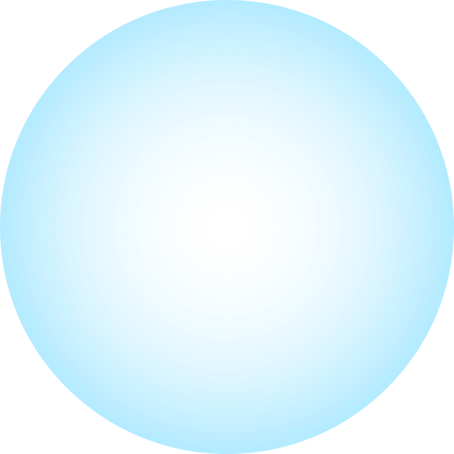
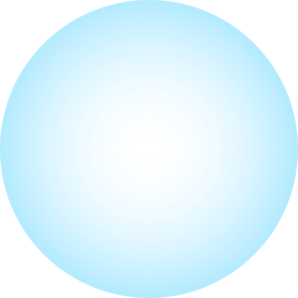
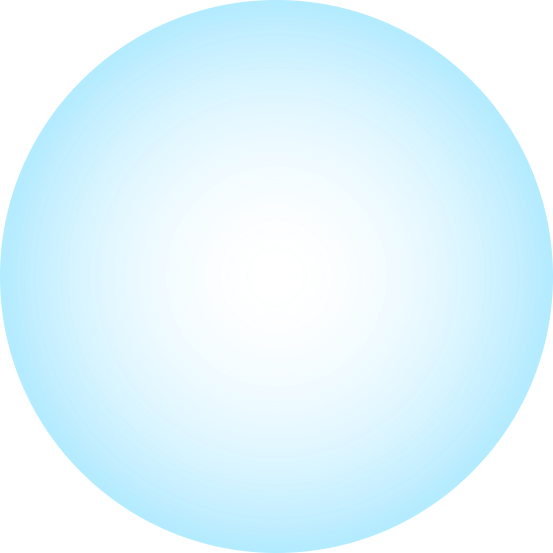
Mixed Feeling
하나의 감정으로 설명되지 않는 마음
1Excitement + Anxiety
새로운 시작이 설레지만 잘할 수 있을 지 불안해요
2Relief + Emptiness
바라던 일을 끝내 후련하지만, 한편으로는 허전해요
Smart Watch
사용자는 생체 신호의 변화를 감지하고, 평소와 다른 흐름이 나타나면 알림을
통해 현재 감정 상태를 확인합니다. 이를 통해 감정 변화의 시작을 인지합니다.
심박수
72BPM
emora
생체 신호가 10분 전과 비교해 조금 다른 흐름을 보이고 있어요.
Background
복합 감정은 마음속에 머무르지 않고, 충동적인 소비나 회피, 반응으로 이어집니다. 충동의 종류와 정도는 감정과 상황에 따라 달라지며, 같은 행동도 서로 다른 감정에서 비롯될 수 있습니다. 행동만으로 원인을 단정하기보다, 감정이 충동 행동으로 이어지기 전 틈이 필요합니다.
Five Dimensions of Impulsivity
충동성 5가지 차원
부정 긴급성Negative Urgency
강한 부정적 감정에 성급히 행동하는 경향
Multiple Facets of Impulsivity
하나의 행동에 작용하는 여러 충동성
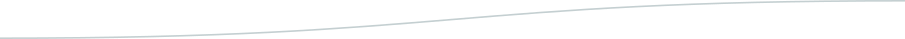
IMPULSIVITY
BEHAVIOR
In-Depth Interview
인터뷰어는 충동행동 대신 다른 행동을 하고 싶지만, 감정의 시작 원인과 대체 행동을 찾기 어려워했습니다. 페르소나의 상황과 필요로 구체화해 감정과 행동 사이의 개입 지점을 살펴보았습니다. 감정과 충동을 확인하고, 실천할 수 있는 대안을 선택하도록 돕는 과정이 필요했습니다.
Period 2026.09.24 - 2026.09.27 Interviewer 26~37세 스마트 워치 사용자 중 충동 유형이 서로 다른 4인
Needs
현재 나의
감정 상태를 알고 싶다
“친구의 좋은 상황을 보면 부럽고 조급한 마음이 들어 충동 소비하게 돼요.”
“반복되는 요청과 힘든 업무로 순간적으로 메시지를 보내고, 이후 쇼핑을 해요.”
Needs
감정과 행동의 연결,
관계를 알고 싶다
“비교하며 복잡한 감정에 충동구매를 해요. 왜 소비로 이어지는지 모르겠어요.”
“화나면 바로 답장하거나 쇼핑해요.
왜 반복하는지 모르겠어요
Needs
충동 행동이 아닌
다른 행동을 하고 싶다
“충동구매하는 대신 가볍게 기분을
전환할 방법을 추천받고 싶어요.”
“바로 답장하기보다 잠깐 진정할
방법을 추천받고 싶어요.”
Needs
가벼운 대안과 그 뒤의 변화를 알고 싶다
“기분 전환 방법을 추천받고, 감정이
어떻게 달라졌는지도 확인하고 싶어요.”
“상황에 맞는 가벼운 대안과 실천
이후의 감정 변화 확인이 필요해요.”
Insight
충동 행동은 저마다
다른 복합감정의 반응
Insight
단순한 해결을 넘어
반복되는 패턴의 발견
Insight
충동 행동 전, 감정과
행동 사이의 틈 형성
Insight
맞춤형 대안 제시와
실제 변화 확인
Key Insight
복합 감정을 이해하고 관리하는 새로운 감정 관리의 경험
복합적으로 변화하는 감정을 초기에 인식하고, 행동으로 이어지기 전 스스로 개입할 수 있는 경험이 필요하다
Persona
인터뷰어는 충동행동 대신 다른 행동을 하고 싶지만, 감정의 시작 원인과 대체 행동을 찾기 어려워했습니다. 페르소나의 상황과 필요로 구체화해 감정과 행동 사이의 개입 지점을 살펴보았습니다. 감정과 충동을 확인하고, 실천할 수 있는 대안을 선택하도록 돕는 과정이 필요했습니다.
Profile
윤서아
26세
대학원생
Needs
Goals
❞
할 일이 있는데 자꾸 다른 걸 하게 돼요. 먹을 때는 좀 나은데, 결국 일도 그대로라 더 불안해져요.
❞
계속된 수정 요청에 답답해서 감정을 토로하고 싶지만, 순간적으로 반응하고 나면 결국 후회하게 돼요.
Needs
Goals
Profile
한재민
33세
프리랜서
Core value
건강하고 에너지를 담은 터콰이즈 색상을 통해 emora의 톤과 무드를 담았습니다. 설정한 emora 터콰이즈는 이모라가 개입한 ‘틈’을 상징하며, 사용자가 잠시 자신의 감정을 돌아보고 돌보는 순간을 시각적으로 나타냅니다.
시각화된
Visualized
즉각적인
Immediate
개인화된
Personalized
Function flow
워치가 감정 변화를 감지하면, emora는 감정을 확인하고 회복 행동을 제안합니다. 회복 이후의 변화는 기록으로 관리되고, 서로의 경험을 나누며 다음 틈으로 이어집니다.
01
Detect
워치가 생체 신호의 변화를 감지합니다
02
Check
감정과 충동의 크기를 확인합니다
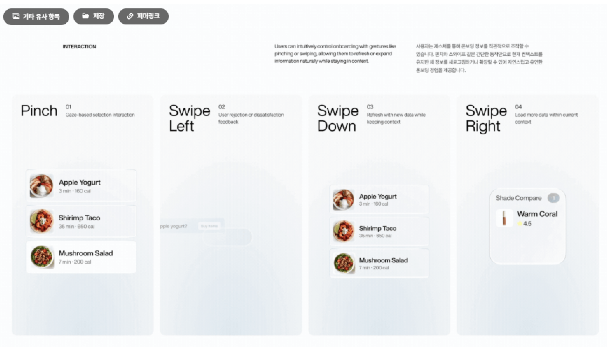
04
Manage
기록으로 변화와 패턴을 돌아봅니다
05
Share
서로의 경험과 응원을 나눕니다
EMORA FILM
감정과 행동 사이, 작은 틈
Brand Color
겹쳐도 비치는 유리와 번지는 그라데이션이 자연스레 겹치고 합쳐지며 감정이 쌓이고 풀리는 과정을 부드럽고 투명한 질감으로 표현합니다. 빛의 굴절과 색의 중첩은 감정의 깊이를 더하고, 유연한 흐름과 은은한 변화로 마음이 움직이는 순간을 시각적으로 더욱 섬세하게 전달합니다.
Design Concept
겹쳐도 비치는 유리와 번지는 그라데이션이 자연스레 겹치고 합쳐지며 감정이 쌓이고 풀리는
과정을 부드럽고 투명한 질감으로 표현합니다. 빛의 굴절과 색의 중첩은 감정의 깊이를 더하고,
유연한 흐름과 은은한 변화로 마음이 움직이는 순간을 시각적으로 더욱 섬세하게 전달합니다.
01Glass
Flexible
감정에 따라 농도와 두께가 변하는 레이어
유연한
02Color · Soft UI · Gradient
Soft
글래스모피즘과 둥근 모서리, 낮은 대비의 경계
부드러운
03Layer · Flow
Connected
카드 단위 정보가 하나의 흐름으로 이어지는 화면
연결된
Step 1
emora는 감정의 흐름을 색상과 형태로 표현해 다양한 복합 감정의 경험을 제공합니다. 사용자는 정해진 색상에 감정을 고정하지 않고, 감정의 강도와 변화 양상에 따라 다채롭게 변화하는 시각 요소를 통해 자신의 감정을 자유롭게 탐색하고 새로운 방식으로 이해할 수 있도록 합니다.
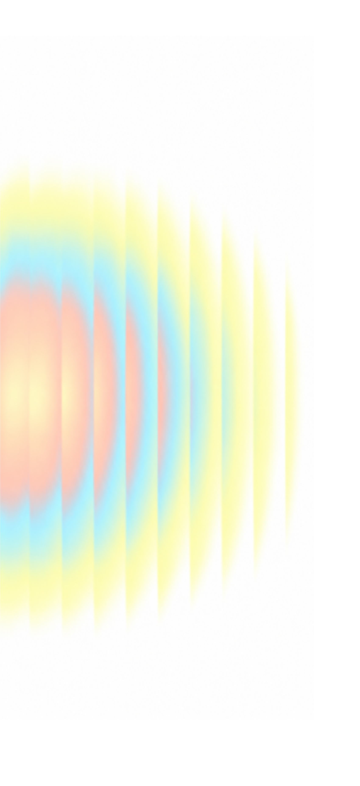
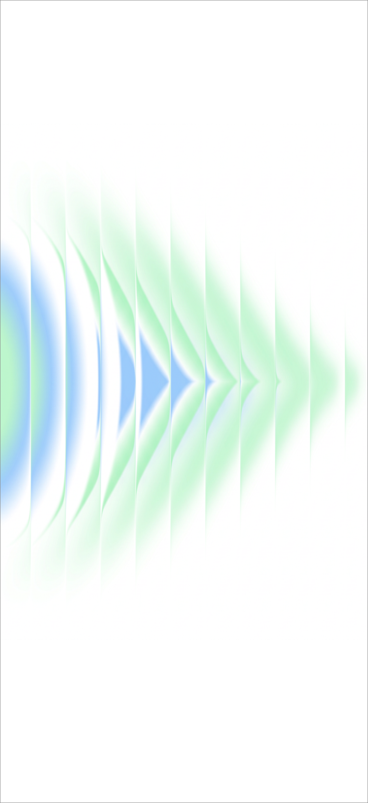
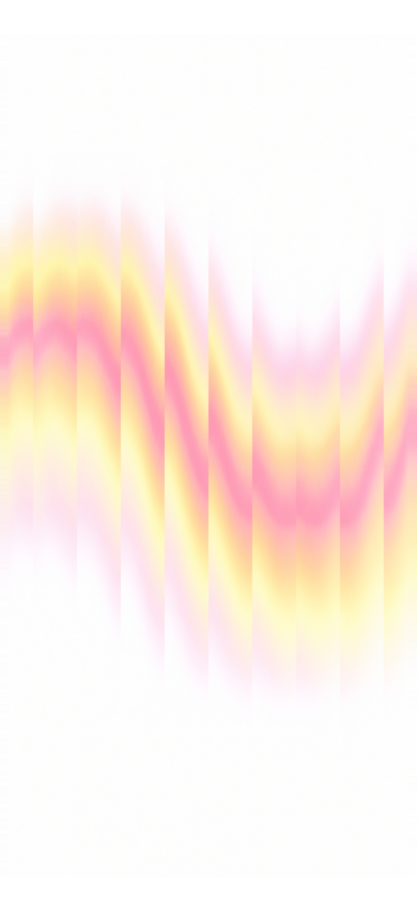
반복
Repeat
같은 감정이 다시 나타났을 때
색상 선택
user
custom color
emora
emotion color
Step 2
사용자는 현재 느끼는 감정과 감정의 강도, 충동이 나타나는 상황과 충동의 크기를 순서대로
선택합니다. 이를 통해 자신의 감정 상태를 구체적으로 확인하고, 감정과 충동 행동 사이의
연결을 파악해 현재 상태에 맞는 대응 방향을 찾을 수 있도록 합니다.
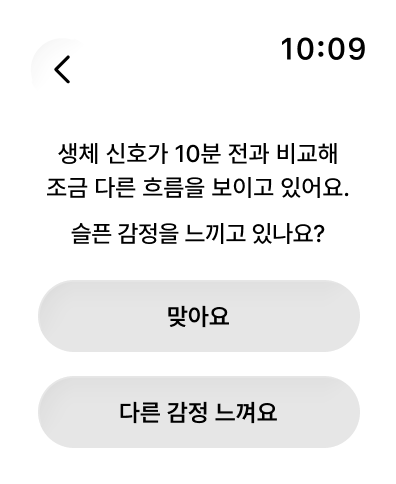
Sensing
사용자는 생체 신호의 변화를 감지하고, 평소와 다른 흐름이 나타나면 알림을
통해 현재 감정 상태를 확인합니다. 이를 통해 감정 변화의 시작을 인지합니다.
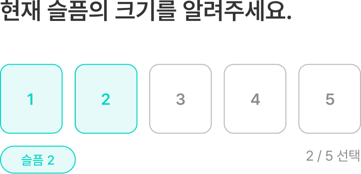
슬픔 2
2 / 5 선택
Check
사용자는 현재 감정과 강도, 충동이 나타나는 상황과 크기를 순서대로 선택해 상태를 확인합니다.
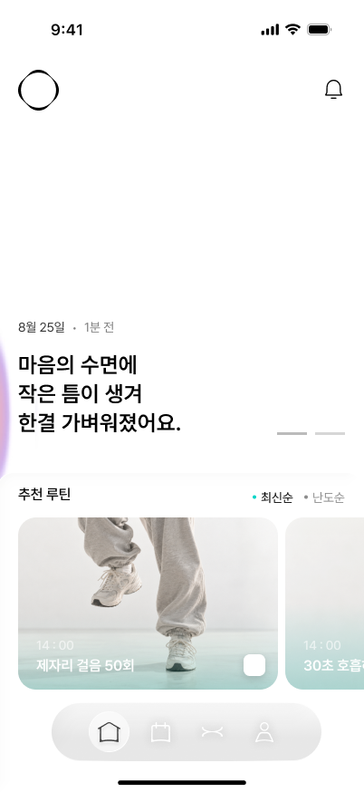
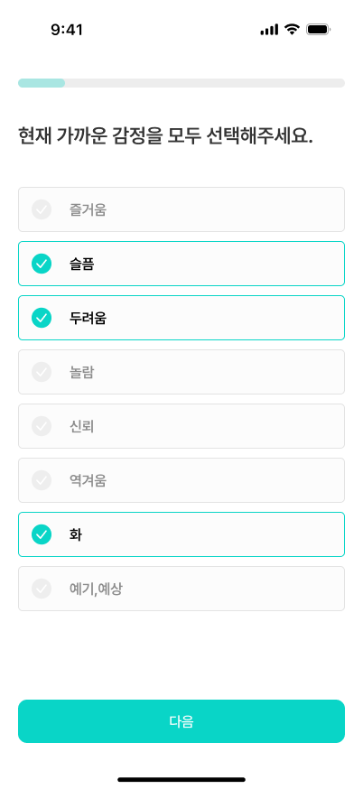
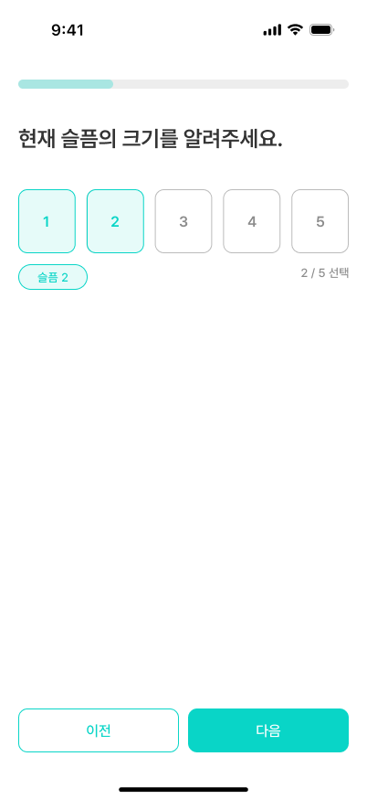
슬픔 2
2 / 5 선택
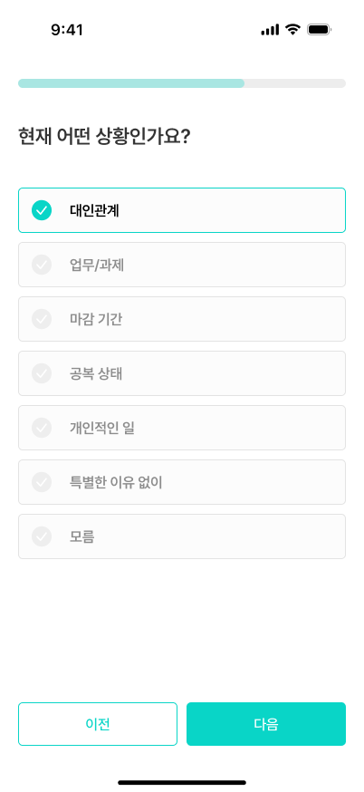
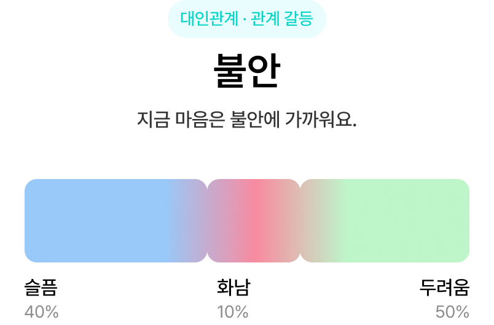
Result
사용자는 현재 감정과 강도, 충동이 나타나는 상황과 크기를 순서대로 선택해 상태를 확인합니다.
Care
emora는 현재의 감정과 신체 신호를 바탕으로, 지금의 상태에 필요한 케어를 제안합니다. 짧은 호흡과 가벼운 움직임처럼 부담 없이 실천할 수 있는 행동을 통해 바쁜 일상 속에 잠시 멈춰 나를 돌아볼 수 있는 ‘틈’을 만들고, 흐트러진 마음의 리듬을 천천히 정돈할 수 있도록 돕습니다.
제자리 걸음 0회
14 : 55
30초
쉬움
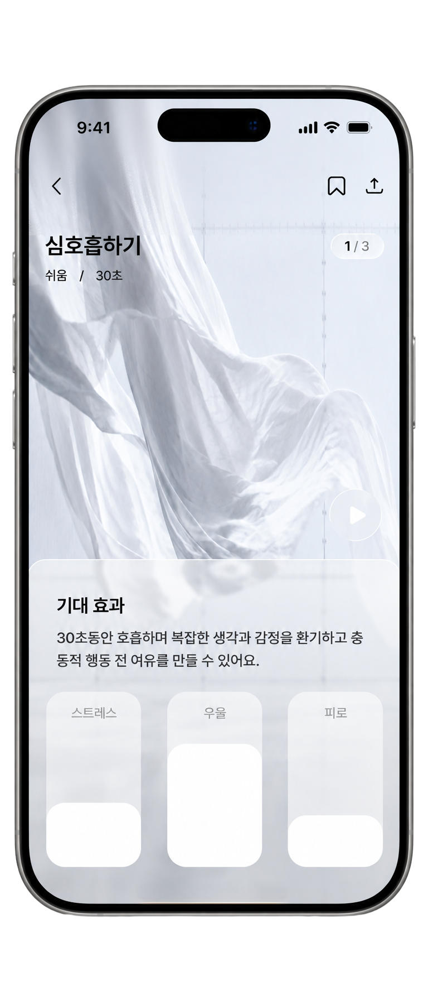
모바일 케어
Archive
emora는 하루 동안 느낀 감정과 생체 신호를 시간순으로 기록하고, 일주일 동안 쌓인 기록을
바탕으로 반복되는 감정과 변화의 흐름을 한눈에 확인할 수 있습니다. 지나가기 쉬운 감정의
순간을 차곡차곡 남겨, 나의 상태가 어떻게 이어지고 있는지 돌아볼 수 있도록 합니다.
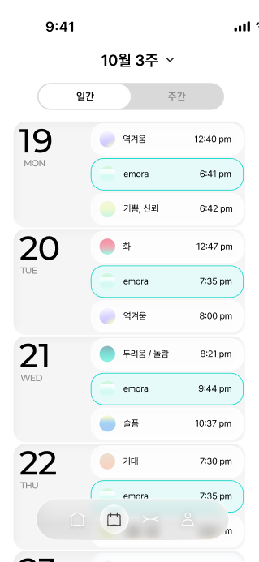
12:00 ~ 14:30
슬픔과 화가 함께 나타나는 패턴이 있어요.
업무/과제와 대인관계에서 감정 영향을 많이 받았어요.
다음 주에는 도움이 되었던 케어를 통해 마음을 돌봐요.
이번 주 감정
일
월
화
수
목
금
토
주요 감정 비율
슬픔 40%기대 30%화 25%이 외 25%
12:40 ~ 18:40
슬픔과 역겨움이 지속되는 패턴이 있어요.
오늘은 대인관계에서 겪은 갈등이 감정에 큰 영향을 주었어
요. 여러 케어 중에서는 심호흡하기가 가장 도움이 되었어요.
금일 감정
09:10
10:23
11:30
12:40
16:10
18:40
18:41
18:42
금일 감정 비율
슬픔 60%역겨움 20%화 10%이 외 10%
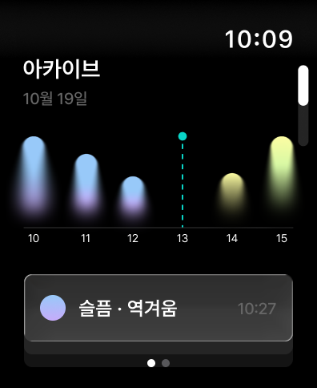
이번 주 감정
일
월
화
수
목
금
토
Emotion Report
오늘의 마음 정리
감정 리포트는 하루 동안 쌓인 감정 기록을 바탕으로 주요 감정과 반복되는 패턴을 정리해, 오늘의 마음 상태를 쉽게 이해할 수 있도록 보여줍니다.
감정 리포트
Emotion Report
감정의 변화
감정 그래프는 하루 동안 기록된 감정의 변화와 강도를 시간대별로 보여줘, 감정의 흐름을 한눈에 돌아볼 수 있도록 합니다.
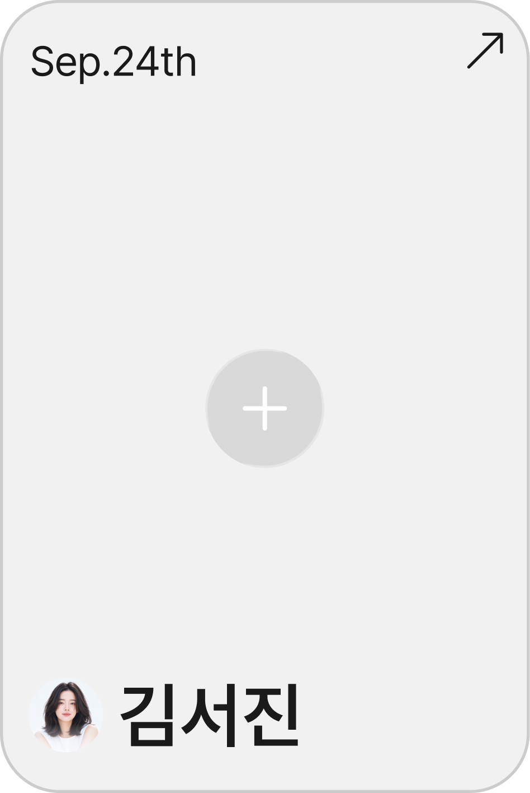
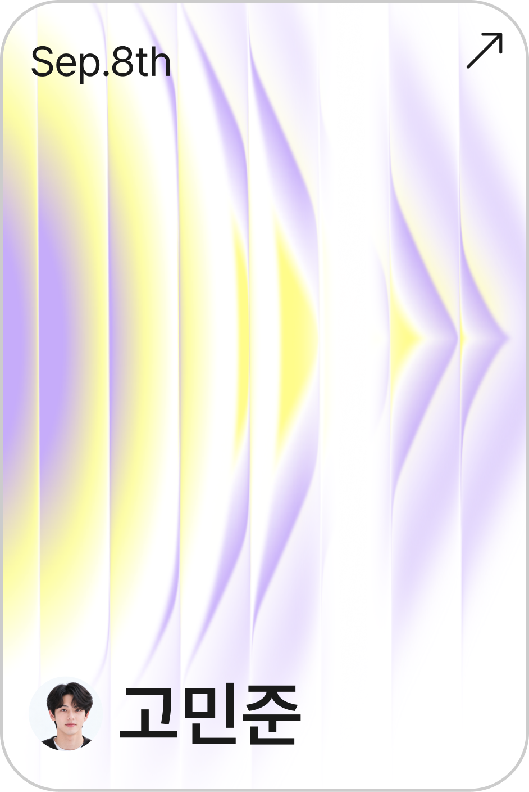
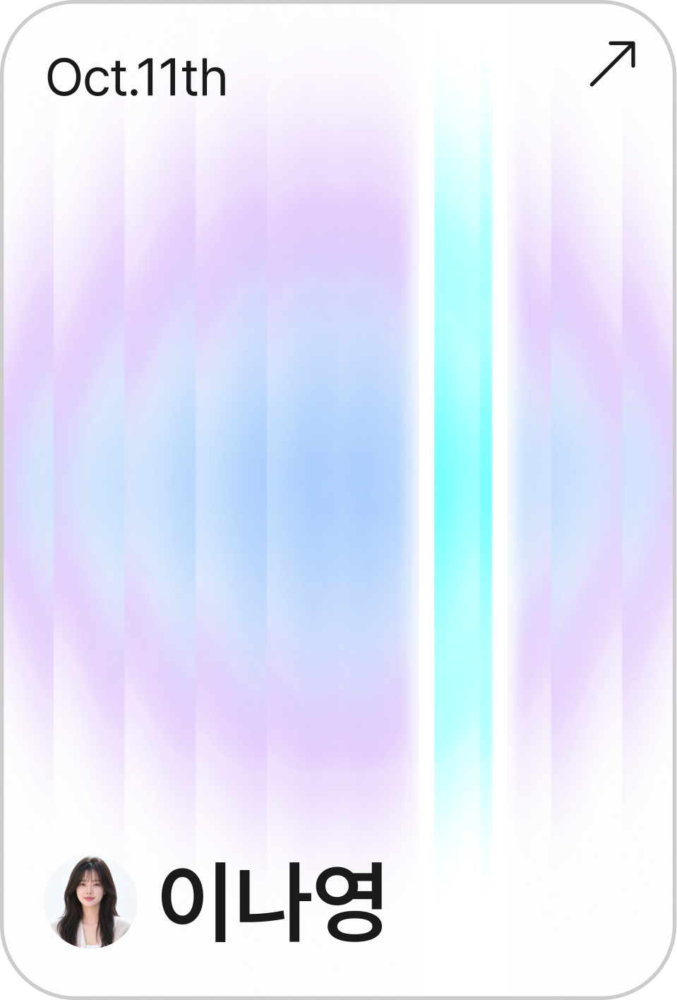
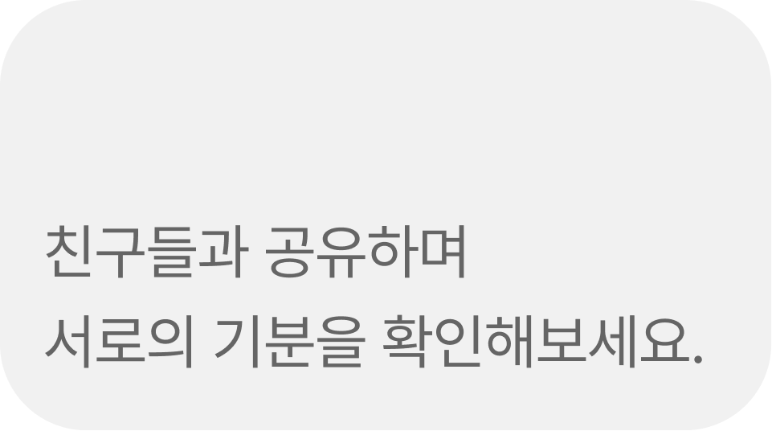
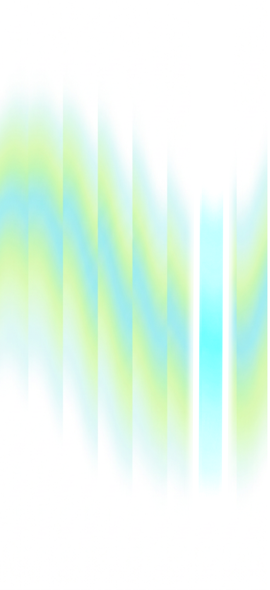
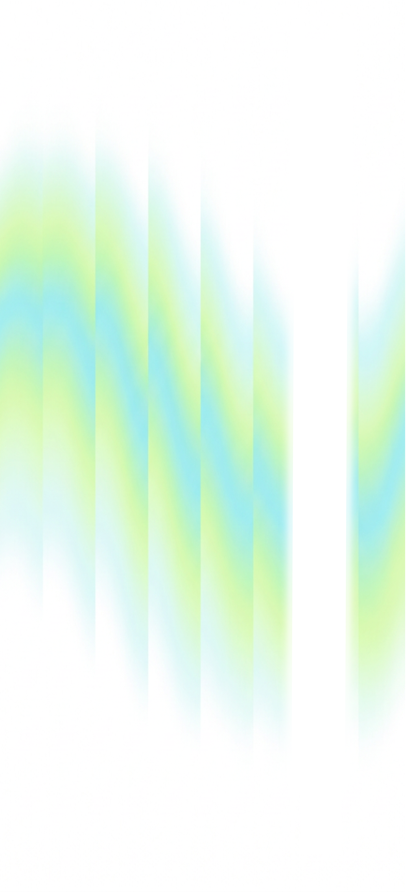
Aug.17th
유정연